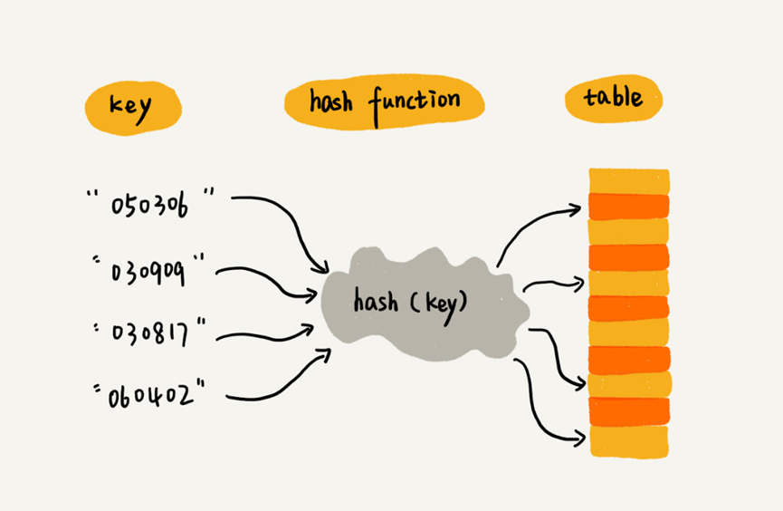
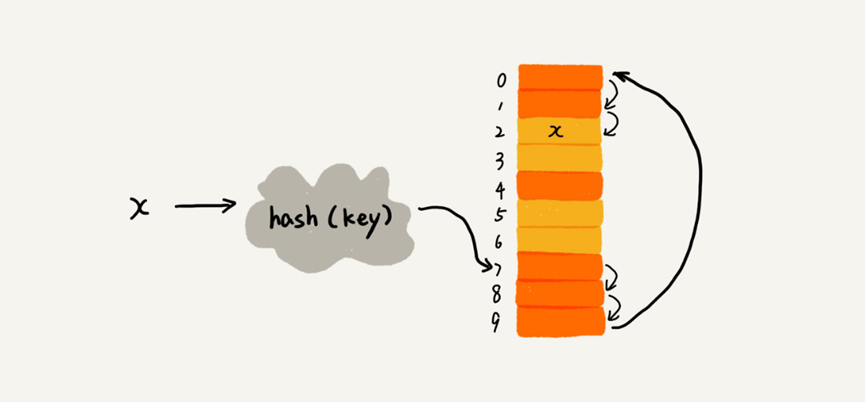
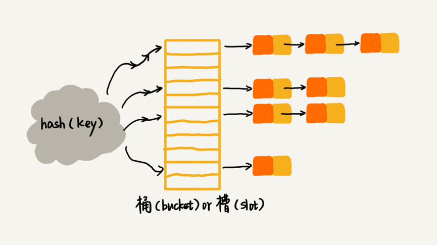

散列表的由来
- 散列表来源于数组，它借助散列函数对数组这种数据结构进行扩展，利用的是数组支持按照下标随机访问元素的特性。
- 需要存储在散列表中的数据称为键，将键转化为数组下标的方法称为散列函数，散列函数的计算结果称为散列值。
- 将数据存储在散列值对应的数组下标位置。

二、如何设计散列函数
总结
3点设计散列函数的基本要求
- 散列函数计算得到的散列值是一个非负整数。
- 若
key1=key2，则hash(key1)=hash(key2)- 若
key1≠key2，则hash(key1)≠hash(key2)
正是由于第3点要求，所以产生了几乎无法避免的散列冲突问题。
三、散列冲突的解放方法
常用的散列冲突解决方法有2类：开放寻址法（
open addressing）和链表法（chaining）
- 开放寻址法
① 核心思想：如果出现散列冲突，就重新探测一个空闲位置，将其插入。
② 线性探测法（
Linear Probing）：
- 插入数据：当往散列表中插入数据时，如果某个数据经过散列函数之后，存储的位置已经被占用了，我们就从当前位置开始，依次往后查找，看是否有空闲位置，直到找到为止。
- 查找数据：通过散列函数求出要查找元素的键值对应的散列值，然后比较数组中下标为散列值的元素和要查找的元素是否相等，若相等，则说明就是我们要查找的元素；否则，就顺序往后依次查找。如果遍历到数组的空闲位置还未找到，就说明要查找的元素并没有在散列表中。
- 删除数据：为了不让查找算法失效，可以将删除的元素特殊标记为
deleted，当线性探测查找的时候，遇到标记为deleted的空间，并不是停下来，而是继续往下探测。- 结论：最坏时间复杂度为$O(n)$
③ 二次探测（
Quadratic probing）：线性探测每次探测的步长为1，即在数组中一个一个探测，而二次探测的步长变为原来的平方。
④ 双重散列（
Double hashing）：使用一组散列函数，直到找到空闲位置为止。
⑤ 线性探测法的性能描述：
用“装载因子”来表示空位多少，公式：
散列表装载因子=填入表中的个数/散列表的长度。
装载因子越大，说明空闲位置越少，冲突越多，散列表的性能会下降。
- 链表法（更常用）
- 插入数据：当插入的时候，需要通过散列函数计算出对应的散列槽位，将其插入到对应的链表中即可，所以插入的时间复杂度为$O(1)$。
- 查找或删除数据：当查找、删除一个元素时，通过散列函数计算对应的槽，然后遍历链表查找或删除。对于散列比较均匀的散列函数，链表的节点个数
k=n/m，其中n表示散列表中数据的个数，m表示散列表中槽的个数，所以是时间复杂度为$O(k$)。
四、思考
Word文档中单词拼写检查功能是如何实现的？字符串占用内存大小为
8字节，20万单词占用内存大小不超过20MB，所以用散列表存储20万英文词典单词，然后对每个编辑进文档的单词进行查找，若未找到，则提示拼写错误。
- 假设有
10万条URL访问日志，如何按照访问次数给URL排序？遍历
10万条数据，以URL为key，访问次数为value，存入散列表，同时记录下访问次数的最大值K，时间复杂度 $O(n)$。
如果K不是很大，可以使用桶排序，时间复杂度 $O(n)$。如果K非常大（比如大于10万），就使用快速排序，复杂度 $O(nlogn)$。
- 有两个字符串数组，每个数组大约有
10万条字符串，如何快速找出两个数组中相同的字符串？以第一个字符串数组构建散列表，
key为字符串，value为出现次数。再遍历第二个字符串数组，以字符串为key在散列表中查找，如果value大于零，说明存在相同字符串。时间复杂度 $O(n)$。


评论加载中